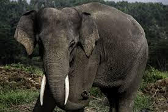

Endangered Animals
back to topics
"We'll lose more species of plants and animals between 2000 and 2065 than we've lost in the last 65 million years.
If we don't find answers to these problems, we're gonna be victims of this extinction event that we're at fault for."
-Paul Watson
So you want to learn about endangered animals.
Are you someone who likes to binge watch funny/ cute animal videos online? If so, you might need to find a different hobby because those cute bear cubs and playful tigers might not be around in the near future for your viewing pleasure.
Extinction rates are at an all time high, as scientists say our planet is in the middle of its 6th mass extinction. They estimate we are now losing species 1,000 times faster, with hundreds going extinct daily. It could be a scary future indeed, with as many as 30 to 50 percent of all species possibly heading toward extinction by mid-century. Noted conservation scientist David Wilcove estimates that there are 14,000 to 35,000 endangered species in the United States alone.
Unlike past mass extinctions, which were caused by events like asteroid strikes, volcanic eruptions, and natural climate shifts, our current crisis is almost entirely caused humans. In fact, 99% of currently threatened species are at risk of due to human activities, primarily those that drive habitat loss, introduction of exotic species, and global warming.
So next time you find yourself watching funny animal compilations on youtube, think about how horrible it would be to lose them. To learn more about what you can do to help, check out our get involved page.



Learn More
SOURCES
"Global Extinction Rates: Why do estimates vary so wildly", Yale
"Current Extinction Rate 10 Times Worse then Previously Thought", IFL Science
PICTURES:
Indonesia Expat, ABC News, Animal Corner, Houston Zoo, Global Wildlife, Deep Blu, Earth, Brittanica, World Wildlife